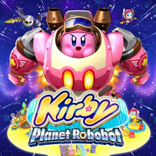

Description
Kirby: Planet Robobot is a 2.5D side-scrolling platform game that uses traditional Kirby platform gameplay; the aim of the game is to guide Kirby towards the end of the level while utilizing his copy abilities to defeat enemies and interact with the environment. This time around, Kirby is defending Popstar from the corrupt Haltmann Works Company, which aims to mechanize the planet and steal its natural resources. [...]

Publishing Info
- Published by: Nintendo Co., Ltd
- Developed by: HAL Laboratory, Inc.
- Realeased: April 28, 2016
Game Categories
- Genre: Action
- Perspective: Side view
- Gameplay: Platform
- Setting: Fantasy/Sci-fi
Quote
Bursting with kaleidoscopic colour and packed with HAL Laboratory's creative touch, Kirby Planet Robobot results in being a sensational adventure for the pink hero.
-- https://www.nintendo-insider.com/kirby-planet-robobot-review/